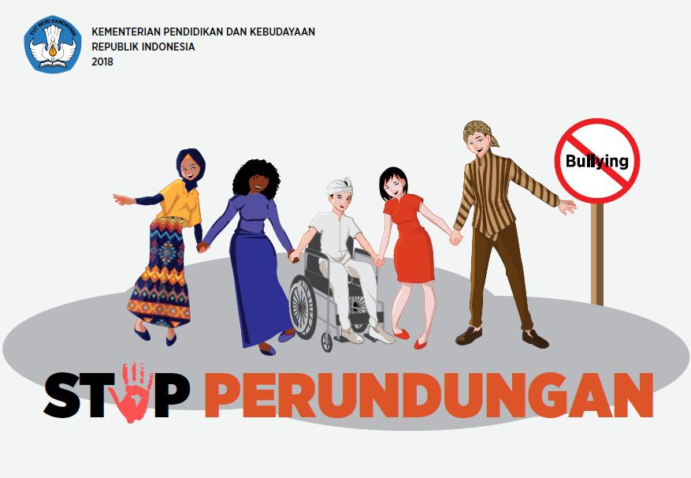

Bullying atau dalam bahasa Indonesia dikenal dengan sebutan perundungan ini dapat menjadi ancaman serius bagi siswa pada berbagai usia. Aktivitas perundungan dapat memberikan dampak buruk dan dapat mengubah karakter baik pada pelaku maupun korban perundungan. Sebelum membahas lebih jauh tentang bullying atau perundungan, mari kenali lebih jauh apa itu bullying.
Perundungan adalah sebuah kata benda dalam Bahasa Indonesia. Kata kerja dari perundungan adalah merundung. Dalam KBBI merundung diartikan sebagai mengganggu; mengusik terus-menerus; menyusahkan. Dalam KBBI juga dijelaskan makna merundung sebagai aktivitas yang menyakiti orang lain, baik secara fisik maupun psikis, dalam bentuk kekerasan verbal, sosial, atau fisik berulang kali dan dari waktu ke waktu, seperti memanggil nama seseorang dengan julukan yang tidak disukai, memukul, mendorong, menyebarkan rumor, mengancam, atau merongrong.
Bullying dapat terjadi pada siapa saja. Bahkan kadang kala baik pelaku maupun korban perundungan tidak menyadari bahwa perlakuan yang diberikan atau diterima di lingkungan manapun termasuk sekolah merupakan bentuk bullying. Oleh karena itu sangat penting bagi Guru Pintar untuk dapat mengenali macam macam bullying supaya dapat memberikan edukasi pada siswa dan juga orang tua. Dengan demikian diharapkan semua pihak memiliki awareness terhadap hal ini sehingga potensi terjadinya bullying atau perundungan dapat ditekan
Jenis - Jenis Bullying :
1. Verbal Bullying / Perundungan Verbal.
Jenis bullying verbal sering kali tanpa sadar dilakukan. Banyak pelaku pelaku perundungan verbal ini berdalih bahwa mereka hanya sedang melontarkan lelucon atau bercanda saja dan melabeli korban baperan jika merasa tersinggung dengan kalimat atau perkataan tidak menyenangkan yang mereka ucapkan. Perundungan verbal atau verbal bullying biasanya berupa kalimat kasar atau ejekan yang ditujukan pada seseorang. Dampak verbal bullying adalah anak atau siswa menjadi takut berbicara atau mengemukakan pendapat. Korban perundungan verbal/ verbal bullying memiliki ketakutan ketika harus tampil di muka umum karena trauma pada tanggapan atau ucapan buruk yang pernah diterimanya. Meskipun sering diremehkan, ternyata perundungan verbal memiliki efeknya jangka panjang dan sangat membekas pada korbannya. Guru Pintar harus waspada ketika mendengar siswa berkata kasar, membuat lelucon yang tidak pantas, sering menertawakan keburukan orang dan membuatnya jadi bahan guyonan. Hal ini perlu segera diatasi karena dapat menjadi bibit-bibit bullying.
Dampak verbal bullying adalah anak atau siswa menjadi takut berbicara atau mengemukakan pendapat. Korban perundungan verbal/ verbal bullying memiliki ketakutan ketika harus tampil di muka umum karena trauma pada tanggapan atau ucapan buruk yang pernah diterimanya. Meskipun sering diremehkan, ternyata perundungan verbal memiliki efeknya jangka panjang dan sangat membekas pada korbannya. 2. Physical Bullying/ Perundungan Fisik.bullying fisik dapat meninggalkan bekas yang mudah terlihat oleh Guru Pintar. Oleh karenanya, dapat dilakukan penanganannya lebih cepat dan pelaku maupun korban dapat diidentifikasi dengan segera
Penindasan fisik ternyata tidak hanya berupa pukulan atau aksi yang meninggalkan bekas atau luka pada tubuh korbannya. Bullying fisik juga juga dapat berupa penghadangan di tengah jalan, menggertak dengan membawa rombongan, atau melempari dengan benda-benda kecil. Orang tua dan juga guru harus waspada ketika siswa terlihat ringan tangan
pada temannya atau orang di sekitarnya. Atau jangan sampai orang tua atau guru memberikan contoh yang membuat siswa menjadi pelaku bullying.
Ciri-ciri anak yang menjadi pelaku perundungan fisik diantaranya adalah bersifat emosional/temperamental dan kurang berempati dengan lingkungan sekitarnya. Sedangkan anak atau siswa yang menjadi korban yang menjadi korban sering menunjukkan ketakutan berlebih saat harus bertemu dengan pelakunya. Korban juga biasanya malas pergi ke sekolah, meminta pindah sekolah, atau menangis ketakutan saat teringat peristiwa bullying yang dialaminya.
Contoh bullying sosial antara lain pengucilan atau intimidasi tidak langsung yang dilakukan secara berkelompok terhadap seseorang. Hal ini banyak sekali dicontohkan dalam film-film remaja untuk membuat mereka menyadari bahaya social bullying. Korban perundungan sosial (social bullying) biasanya akan mengalami kesulitan dalam berteman dan sering menyendiri.
Hal ini dapat terjadi karena korban mungkin pernah melakukan tindakan yang tidak disukai teman-temannya, memiliki kelebihan yang menonjol sehingga menyebabkan pelaku merasa iri, atau memang memiliki kesulitan berinteraksi dengan orang lain sejak kecil. Guru Pintar tidak boleh membiarkan perundungan sosial terjadi sampai berlarut-larut karena bisa berdampak pada masa dewasa korban. Korban akan menjadi terbiasa menutup diri dan rentan mengalami depresi.
Cyber bullying meskipun tergolong baru karena baru muncul sejak sosial media dan internet marak di kalangan masyarakat, namun sering sekali terjadi di sekitar kita. Munculnya hater yang sering kali memberikan komentar-komentar pedas pada laman media sosial merupakan salah satu contoh dari perundungan dunia maya.
Bentuk-bentuk lain bullying siber misalnya status atau unggahan gambar bernada negatif yang ditujukan pada seseorang dan obrolan via aplikasi chat yang mengintimidasi korban. Jika siswa menunjukkan ekspresi yang sedih atau marah saat membaca atau melihat komentar-komentar tidak menyenangkan pada gadget mereka, Guru Pintar harus segera mengambil tindakan. Guru Pintar dapat bekerja sama dengan orang tua supaya selalu memantau gadget yang dipegang oleh siswa. Harapannya, jika ada indikasi perundungan di dunia maya akan segera dapat diatasi
5. Sexual Bullying / Perundungan Seksua.Sexual harassment atau pelecehan seksual juga dapat dikategorikan sebagai bullying karena pelakunya memiliki motif tendensi negatif. Dewasa ini, makin banyak kasus-kasus pelecehan seksual yang menimpa anak-anak. Guru dan orang tua harus memberikan pendidikan seks dasar pada anak sesuai dengan usia mereka. Ajarkan pada mereka untuk dapat menjaga diri, atau mengenali bagian tubuh mana yang boleh disentuh orang lain, dan juga jangan membiarkan orang asing menyentuh tubuh anak.
Jangan berpikiran bahwa edukasi seks adalah hal yang tabu. Jika diberikan sesuai dengan usia dan juga kebutuhan siswa, maka akan sangat berguna untuk menekan potensi terjadinya sexual bullying di mana saja.
Beritahukan pengelompokan jenis bullying dan berikan contohnya pada siswa supaya mereka aware. Mari antisipasi bahaya bullying sejak dini.
BAGAIMANA CARA MENGATASI PERUNDUNGAN?
Stop bullying dengan berbagai cara mengatasi bullying ini :
| Jenis-Jenis Bullying | Pengertian | Cara Mengatasi Bullying |
| 1. Verbal Bullying / Perundungan Verbal. | Bullying verbal adalah bentuk perundungan dengan menggunakan kata-kata, pernyataan, sebutan, atau panggilan yang menghina secara lisan. Tindakan ini bertujuan untuk meremehkan, merendahkan, mengintimidasi, dan menyakiti korbannya | 1. Menjadi panutan yang baik. |
| 2. Physical Bullying/ Perundungan Fisik. | Physical Bullying: jenis bullying dimana pelaku menggunakan tindakan fisik untuk menindas target yang dijadikan korban. Pelaku biasanya memiliki fisik yang lebih kuat dan bertindak lebih agresif daripada teman-temannya. Secara umum, physical bullying lebih sering dilakukan oleh laki-laki. | 2. Membekali anak dengan pengetahuan tentang bullying. |
| 3. Social Bullying/ Perundungan Sosial. | Bullying jenis ini melibatkan banyak pelaku dan biasanya dilakukan berkelompok. Bullying dilakukan dengan cara mengabaikan, mengucilkan atau menghindari. Sikap berupa pandangan sinis, tawa yang mengejek hingga bahasa tubuh yang bermaksud untuk merendahkan juga jadi bentuk dari social bullying. | 3. Mendirikan komunitas stop bullying. |
| 4. Cyber Bullying/ Perundungan Dunia Maya. | Cyber bullying adalah kejadian dimana seorang anak atau remaja diejek, dihina, diintimidasi, atau dipermalukan oleh anak atau remaja lain melalui media internet, teknologi digital atau telepon seluler. Bentuk dan metode tindakan Cyber bullying amat beragam. | 4. Ajarkan anak untuk melawan bullying. |
| 5. Sexual Bullying / Perundungan Seksua. | Pelecehan seksual adalah perilaku pendekatan-pendekatan yang terkait dengan seks yang tak diinginkan, termasuk permintaan untuk melakukan seks, dan perilaku lainnya yang secara verbal ataupun fisik merujuk pada seks. | 5. Ciptakan lingkungan penuh kasih sayang di rumah. |
FORMAT MULTIMEDIA
Format Hyperlink
| > |
| indah |
Awal Bagian 1 Dokumen................................PERUNDUNGAN
Akhir Bagian 1 Dokumen...............................sehingga potensi terjadinya bullying atau perundungan dapat ditekan
Kembali ke Atas
Awal Bagian 2 Dokumen................................JENIS - JENIS BULLYING
Akhir Bagian 2 Dokumen...............................menekan potensi terjadinya sexual bullying di mana saja
Kembali ke Atas
Awal Bagian 3 Dokumen................................BAGAIMANA CARA MENGATASI PERUNDUNGAN
Akhir Bagian 3 Dokumen...............................Ciptakan lingkungan penuh kasih sayang di rumah
Kembali ke Atas
Awal Bagian 4 Dokumen................................TABEL PERUNDUNGAN
Akhir Bagian 4 Dokumen...............................Ciptakan lingkungan penuh kasih sayang di rumah
Kembali ke Atas
Awal Bagian 5 Dokumen................................FORMAT MULTIMEDIA
Akhir Bagian 5 Dokumen...............................Backsound audio
Kembali ke Atas
Awal Bagian 6 Dokumen................................FORMAT HYPERLINK
Akhir Bagian 6 Dokumen...............................Bagian dokumen 6 lalu kembali ke atas
Kembali ke Atas